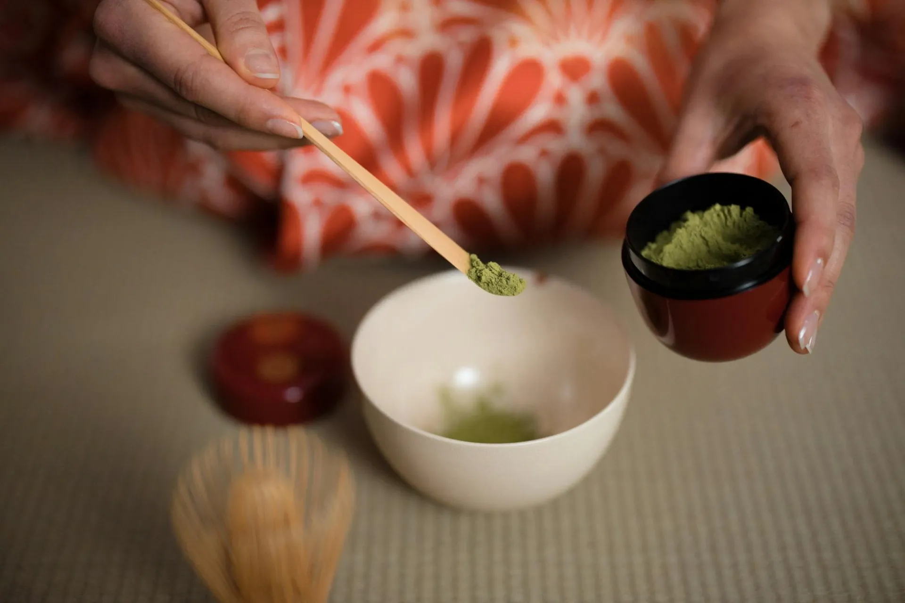
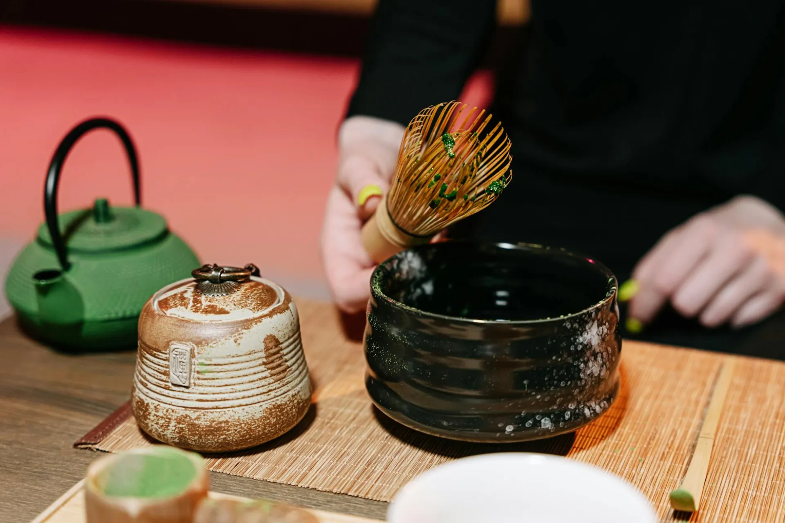

Four generations of Urasenke practice, a lifetime of dedication, and a single guiding principle: that the bowl, filled with intention, can still the most restless mind.

Yuki Harada was born into a family of tea practitioners in Uji, the ancient tea-growing heartland south of Kyoto. Her great-grandmother was a student of the 14th Iemoto of Urasenke — a lineage that carries the full weight of Sen Rikyu's original teaching.
At sixteen, Yuki entered formal study at Urasenke Headquarters in Kyoto, spending eight years in residency before receiving the rare Shinshinkai certification — a level that fewer than forty living practitioners hold worldwide.
After years teaching in Kyoto and Tokyo, Sensei Harada established CHADO Studio with a singular intention: to offer the ceremony not as museum artifact, but as a living encounter with the present moment — available to those who wish to practice, regardless of their background.
She continues to return to Kyoto each spring for renewal of practice, and sources all ceremonial tools directly from craftspeople she knows personally.
The Urasenke school traces its origins directly to Sen Rikyu, the great tea master who codified the Way of Tea in the 16th century. CHADO carries this lineage forward.
The founder of the wabi-cha aesthetic. Tea master to Oda Nobunaga and Toyotomi Hideyoshi, Rikyu distilled chado into its essential form: the four principles of harmony, respect, purity, and tranquility.
Sen Sotan, Rikyu's grandson, establishes the Urasenke school at the north entrance of his residence in Kyoto — "ura" meaning back, or inner. The lineage of Grand Tea Masters begins here.
Yuki's great-grandmother, Tomoko Harada, begins study under the 14th Iemoto after the war — finding in the ceremony a practice of reconstruction and renewal. The family's chado lineage begins.
At sixteen, Yuki enters Urasenke Headquarters in Kyoto for eight years of intensive residential training, living within the compound and studying under senior instructors of the Xv Iemoto.
Yuki receives the Shinshinkai — Urasenke's highest practitioner certification. One of fewer than forty holders worldwide, the certification permits her to teach and certify students in all ceremony styles.
After six years teaching in Kyoto and Tokyo, Sensei Harada establishes CHADO Studio — a space dedicated to the ceremony as a living encounter. The first private ceremony is held in autumn.
Urasenke is one of the three main schools of Japanese tea ceremony, descended directly from Sen no Rikyu. With headquarters in Kyoto and affiliated schools in over sixty countries, it is the most widely practiced school in the world.
What distinguishes Urasenke is its philosophy of openness — the belief that the Way of Tea is for all people, not merely the aristocracy. This spirit animates everything at CHADO: our ceremonies welcome all guests equally, without prior knowledge or experience.
The school's guiding principle — Peacefulness through the Way of Tea — recognizes that the ceremony itself is an act of building connection between human beings, one bowl at a time.

At CHADO, we teach the ceremony as a way of being rather than a set of procedures. Every movement is an opportunity for greater presence.
We begin with the body. Each fold of the fukusa cloth, each placement of the chawan, is practiced until it becomes effortless — and in that effortlessness, attention is freed to go deeper.
The tearoom is designed to teach. Every proportion, every material, every source of light has been considered. We ask guests to let the space speak before they try to understand it intellectually.
Chado is a relational practice. The host moves in service of the guest; the guest receives with full attention. This dance of care and gratitude is the ceremony's deepest teaching.
Whether you come for a single ceremony or commit to ongoing instruction, CHADO offers a space of genuine depth. We welcome all guests.